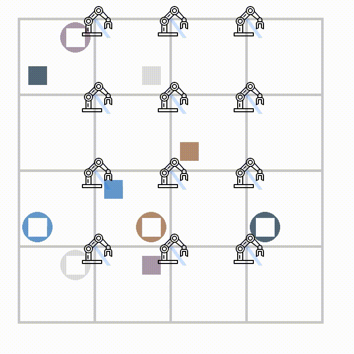

Collision- and Reachability-Aware Multi-Robot Control with Grounded LLM Planners
Anonymous Submission, Under Review
TLDR: We propose a framework to integrate physical constraint knowledge into two small-scale 3B/4B LLMs and implement two BoxNet-based environments. Experiments show that our method significantly outperforms state-of-the-art LLMs in these multi-robot control tasks such as GPT-4o/o4mini, and larger LLMs with 32B params.
Additional Examples
This website presents the example reasoning trace and the action trace generated by our grounded LLM planners for BoxNet2D and BoxNet3D environments.
BoxNet2D
Figure 1: BoxNet2D FullPlan Example 1

Figure 2: BoxNet2D FullPlan Example 2
BoxNet3D
Figure 3: BoxNet3D FullPlan Example 1
Figure 4: BoxNet3D FullPlan Example 2
Acknowledgement
Our implementation is largely inspired by many previous works, including:
MuJoCo,
Scalable Multi-Robot, and RoCoBench.
We want to thank the authors for open-sourcing their works.